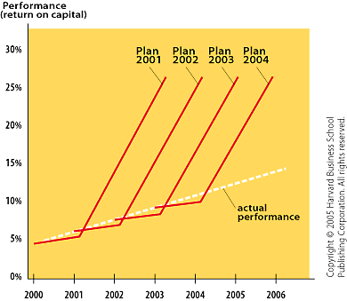
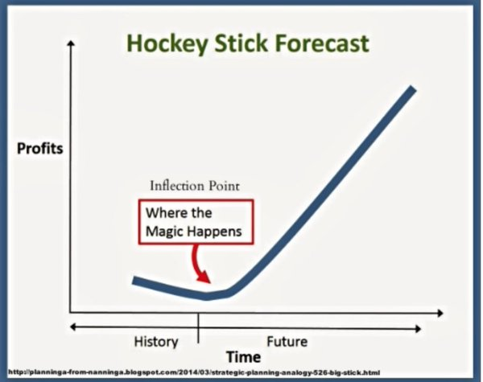
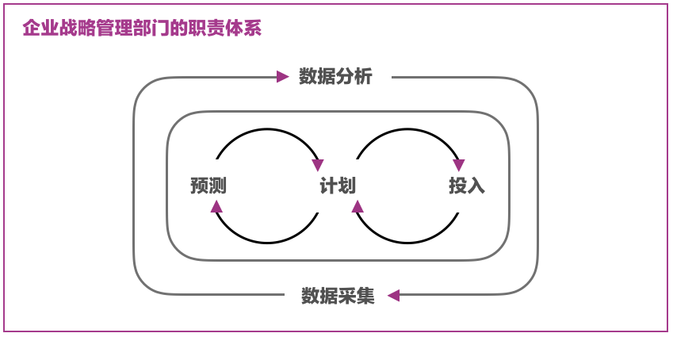
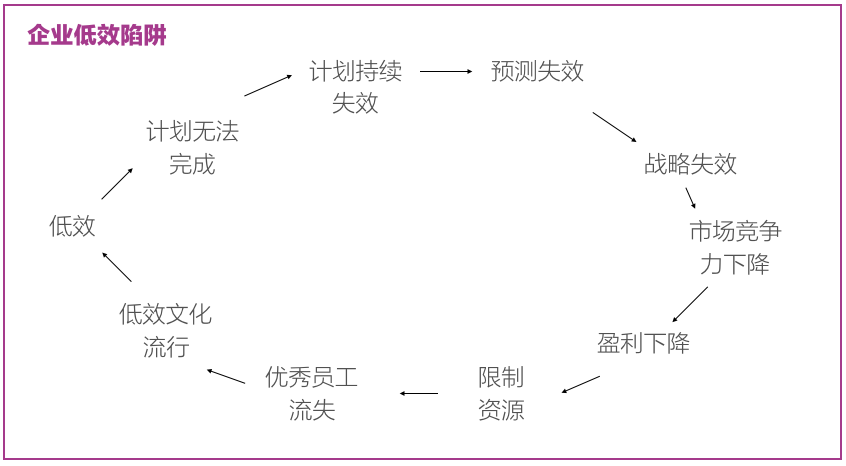

《战略十篇》的第九篇书稿，来自于Michael C.Mankins和Richard Steele ，原文刊于《哈佛商业评论》2005年8月刊（链接）。
战略、计划、执行、绩效是所有企业领导者从未停止的工作。而从结果来看，多达63%的公司未达到其战略规划所承诺的业务表现。战略与绩效的鸿沟往往让高层管理者不知所措，困惑终可归于那个经典的问题：
业务不成功到底是战略错误还是执行问题？
此问题之所以经典，是因为「错位」—— 在需要调整的战略时一味强调执行、或朝令夕改却不无执行效率。最后结果是混乱和浪费、与长期的低效成长甚至衰落。
而准确发现战略和绩效间鸿沟，并采用正确的方式填补——制定或调整战略适应执行、或推进执行适应战略——成为优秀公司和管理者的特点。
在作者的调查中，那些业务表现卓越的公司无不遵循严格的计划和执行过程、持续发现战略到绩效的鸿沟、并有针对性进行补救。
鸿沟
战略到绩效的鸿沟普遍存在于公司运营中，有其共同的表现：
公司极少把当前绩效与长期目标进行跟踪，只有不到15%的公司经常性地对当年业务成绩与上一年的战略计划进行对比。对高层管理者而言，结果是，战略规划、收益预测、真实收益、投资组合、与投资决策之间难以形成有效的指导关系——决策引擎被侵蚀直至废黜——只能依靠频繁替换管理层相关人进行休克疗法。
常年低于预期的业务表现，某个公司业务长期低于预期真正损伤的，是将低于预期的表现当作常态，又无战略调整的决心，从此认为「三年不开张、开张管三年」。此效应称作「百叶窗低效」（下图）——每年的开始都雄心勃勃，然而每年都未能完成业务目标。

「百叶窗低效」的危害极大，首先它使得战略决策变成形式，投资变得毫无理由；其次它制造一种人人可接受的低效常态；最后，战略和执行的鸿沟越来越大：
- 战略制定者无法从业绩中获得真实反馈制定目标，战略无法调整，只可认为「执行有问题」；
- 执行者缺少业绩的激励、感到决策层的参与有限、无可适从、只可认为「战略有问题」。
低价值转化，有超过2/3（37%）的受访者表示战略执行所带来的企业价值低于50%，排名前5的原因有：
- 资源限制；
- 战略宣导失效；
- 执行的定义模糊；
- 缺少执行的责任感；
- 组织中部门墙与文化因素。
其综合表现是，基层员工不知要做什么、什么时候做、需要什么资源、于是只有打着避免山头主义的旗子模糊化责任与自保。
绩效瓶颈上层难以发现，传统制定计划、分配资源、跟踪绩效的方式难以让高层领导者发现绩效瓶颈之所在——到底是计划出了问题？还是执行不力？还是二者都不是。
现实经营中，我们经常看到所谓「曲棍球棒式预测（参考）」(下图)，认为一个极具野心的计划可以激励执行——「计划定高一点，效益更好一点」。

结果是，管理层不在真实业务场景中寻找绩效瓶颈，而是在问责时所有人都隐含一句潜台词「并非战略或执行有误，而是去年计划定得太高」。
低效文化，长期的战略到绩效的鸿沟滋生「低效文化（Culture of Underperformance）」，其过程慢而难以察觉，同时极有可能腐蚀公司追求卓越的核心，而难以逆转。其发生的逻辑是：
- 不切实际的计划让所有人接受其不可实现的现实；
- 所有人习惯于低于预期的表现，再也无人愿意作出业务承诺，承担业务责任；
- 企业开始滑入平庸，不再自我批判和自我解析；
- 最终，企业失去追求卓越的能力。
对策
优秀公司把战略、计划、执行、跟踪整合在一起进行管理。作者经过对这些公司调研，总结了7条将战略和绩效紧密结合的规则：
规则一：简单和实效性。
企业战略在大多数企业里都是抽象和具有启发性的，而企业真正需要的，是能够对一线员工进行指导性的原则，这是连接战略和绩效的首要因素，看似高瞻远瞩的企业愿景和不知所措的员工总是同时存在。
Bob Diamond，巴克莱资本CEO，在谈到公司战略时说：「我们非常清楚我们不会与美国大投行进行直接竞争，这也是我们专注于欧元、固定收入、以及合业时代（后斯蒂格尔法案时期）创新产品的原因」。
这些极为简单的战略降低了企业的沟通成本，从而使得执行更加有效、职责更加明确、绩效更易跟踪。
规则二：验证假设，而非沉迷于预测。
在许多公司业务部门的战略讨论都成了与公司管理层进行预期和资源的讨价还价，最后则转化为一场政治游戏，一方（业务部门）要求降低短期利润预期（以获保证年终奖金）；另一方（管理层）要求更高长期利润（以满足董事会或外部机构）。博弈的结果就是「曲棍球棒式预测」——既让业务部门一方降低短期盈利的压力、又满足了管理层的面子。
这种政治游戏完全脱离真实市场情况、业务表现、与激励措施，充满着主观性，完全背离业务预测的意义：推动真实业务的发展，而非保护业务部门和管理层管理者的职位安全。
安全产品世界巨头Tyco的前CEO Ed Breen在2002年加入公司时所面临的是一团乱麻：42个业务群、几百个产品线，数十年收购不计其数的子公司，极少业务实体有可信的财务预测。
为了重振Tyco，Breen建立一支跨业务群的团队，将战略、市场营销、财务统一划归管理，为Typco的主要市场，提供关于其产品、服务、成本、以及价格定位的详尽信息。该团队每两周向董事会汇报，集中讨论将推动业务成长的关键假设，而非长期的财务表现。一旦假设（如某市场趋势）有足够的信息和数据进行支撑，Tyco的财务引擎将快速开动，为相关业务群提供支持。
这种收集数据、验证假设、财务预测、再到财务支撑的方式让业务部门开始讨论真正的经济现实（Economic Reality），而用预期粉饰太平；管理层也参与到业务现实中充分参与计划，而非简单设定不现实的目标。同时，对经济现实的讨论帮助业务部门和管理层在共识中讨论，减少隔阂，这个共识便是：计划无法驱动绩效，真正的经济现实才是！。
规则三：严格的框架、统一的语言。
战略到绩效鸿沟的本质为：1）管理层（Corporate Center）同业务群（Business Units）之间的鸿沟；2）规划、市场、财务等横向部门间的鸿沟。一个严格的执行框架作为统一的语言，横向或纵向粘合着企业中各个实体。
一个被受访企经常使用的框架，是「利润池（Profit Pools）模型」（下图）。在此框架中，企业预期的长期财务表现将与市场竞争程度、当前份额分布、以及利润率挂钩；企业竞争力要么来自于市场份额的增长、或利润率的提、或二者皆是。

「利润池（Profit Pools）模型」所体现的，是将业务群放在现有市场现状中，用市场语言进行讨论，充分考虑自身、竞争者、以及市场现状，最终做出最理性的财务表现预测。同时在表现低于预期时，也能快速做出判断，到底是执行不力、还是过度乐观的计划。
规则四：更早关于资源配置的讨论。
预测、计划、以及投入成为优秀战略执行的三个基石。这里的关键要素是指1）预测是否基于现实；2）计划是否可执行；3）资源投入是否关键和及时。
资源投入的关键性在于对计划执行的关键性影响，及时性在于对资源投入的反馈做出及时判断，从而及时调整资源投入的力度或执行计划本身。优秀的企业战略管理职能部门，通常同时具有预测、计划、和投入三大职责，并通过数据采集和分析的方式同时履行（下图）。

规则五：清晰定义优先级
并非所有战术执行都能起到关键效果、资源也并非无穷无尽，管理者需要在众多执行方案中找到对目标绩效影响最大的优先解决。例如航空及军工产品巨头Textron（德事隆）公司要求每一个业务群制定自己的「改进优先级」，每一个优先级中包含一项重要执行计划，其中包含职责、时间线、和KPI，这样的工作方式贯穿在公司每一个层级中。这里的经营艺术在于，战略的制订者不可能控制每一个层次的执行细节，而只需要1）保证战略目标通达每个组织层次；2）在每一层级形成优先级的工作模式；3）管理职责、沟通、和优先级的合理性。
规则六：持续采集绩效信息
预测可能失真、计划可能无法执行、资源可能分配不合理、再加上外部竞争环境的剧烈变化，战略到绩效的转化有着诸多不可控的因素，这也使得战略投资极容易走上不归路。优秀公司永远在一开始拥有对绩效多角度、多层级的采集能力；这些数据帮助战略管理者在预测、计划、和资源三者中进行动态调整（下图）。
规则七：奖励和构建执行能力
执行力是将战略转化为绩效的唯一核心，特别是在企业规模迅速扩大时，企业必须鼓励和构建在各个层级最优秀的执行能力，并给予最优的奖励。执行能力不简单只是按照命令完成工作那么简单，优秀公司对执行力有着多角度的定义，例如3M公司将最优秀团队成员定义为以下6个方面：
- 规划路线（Chart the Course）；
- 激励他人；
- 展现道德、团结、和自律；
- 交付结果；
- 提高标准；
- 创新的使用资源。
大多数公司并未意识到员工能力与企业战略执行的关系，而只停留在完成本职工作、得到职业成长的层次。
写在最后
公司只有不断适应市场，才可能存活、发展、到精进，公司的所有战略都围绕在其所在市场的变化上，战略无法最终产生市场回报、公司无法适应市场变化、最终走向衰落：

文中提到的7大规则为所有企业管理者提出了以下问题：
- 在您的企业中，战略是否易于沟通和具有实际指导意义？
- 在您的企业中，预测是否基于真正的市场反馈和现实？
- 在您的企业中，战略执行有严格的框架和统一的语言？
- 在您的企业中，资源配置是否及时和具备关键性？
- 在您的企业中，战略执行中，优先级是否清晰明确？
- 在您的企业中，绩效信息是否被持续采集，并指导战略执行？
- 在您的企业中，高绩效员工是否定义、被鼓励、和公正奖励？
如果这些问题的答案都是否，那么极有可能企业已经陷入了低效陷阱，战略无法形成真正的商业表现，企业即将或已经开始走向衰落。
本文是《战略十篇》的第九篇，并未提出太多创新的观点，皆是基础，却令人振聋发聩，打着创新文化、去中心、扁平化的旗子，绩效不彰像癌症一样蚕食着企业曾经的核心竞争力，唏嘘不已。